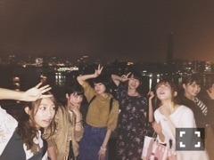

| 2015/10 30 Fri | 雨に負けない色。675 回目 |
10月28日13thシングル
「今、話したい誰かがいる」
発売されました！
ポピパッパパーはType-A
個人PVはType-B
隙間は通常盤です！
よろしくお願いします（≧∇≦）

ポピパッパパーMVで
みんなが使っているバッグは、
Samantha Thavasa Petit Choice
のおけいこバッグ！
ショルダー、リュック、ハンドバッグ
の3ウェイで使うことができます。
ワッペンを付けて自分だけの
オリジナルバッグにしよう＼(^o^)／

コラボCMもう見たかな？
実はMVと繋がってるのです。
表題曲はFrom AQUA CM曲
映画ここさけ主題歌、
ポピパッパパーはサマンサCM曲
すごい、、
GO,GO!イサキちゃん 第1話
見たかな(o_0)？
雨がイサキちゃんらしくて
とてもお気に入りです。
イサキ、カトゥの私服
まるで揃えてきたかのように
赤色がアクセント！きせき！

べちょべちょイサキ
◆乃木坂46SHOW!
かわいいメイドの電気屋さん
メイドシリーズ第3弾です。
出させていただけて嬉しいです！が！
回を増すごとにツンが
激しくなってきてることに
気がつきました。どうだったかな
またもし、やることがあったら
もう少し可愛くできれば、な。
みんなでツインテールしてたの
気づいたかな？？
みんなノリがいいんだな(^-^)
コントといい舞台といい個人PVといい
少しずつ違えど最近
ツンケンした役になる
ことが多い私です。
ほんとはそんなじゃないのよ(^-^)/
いろんな人になりたいな。
単調な部分をどうにか。
なんでもやってみたい気持ちです。
今年に入って動きの流れが
大きく変わってきて、
それが波があって何かあったとしても
楽しいという気持ちは変わりません。
今は積極的にいろんなものに
参加したり話を聞いたり、
好きなことに没頭してる毎日です。
あ、個別握手会全完売したと！
聞きました！びっくりです！
応援ありがとうございます
明日は日テレハロウィンライブ！
まりか
コメント(502)
2015/10/30 21:54